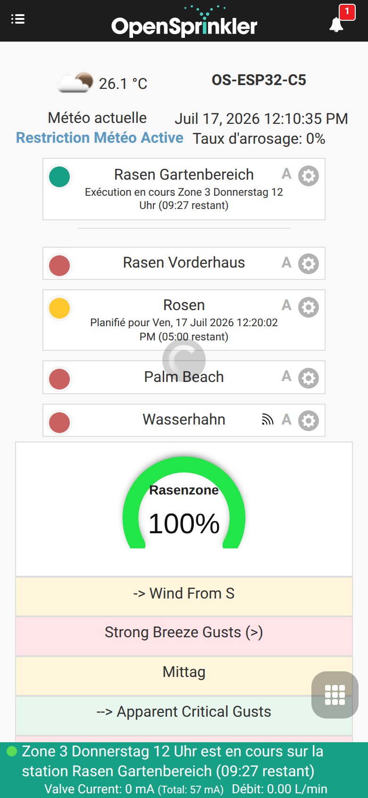
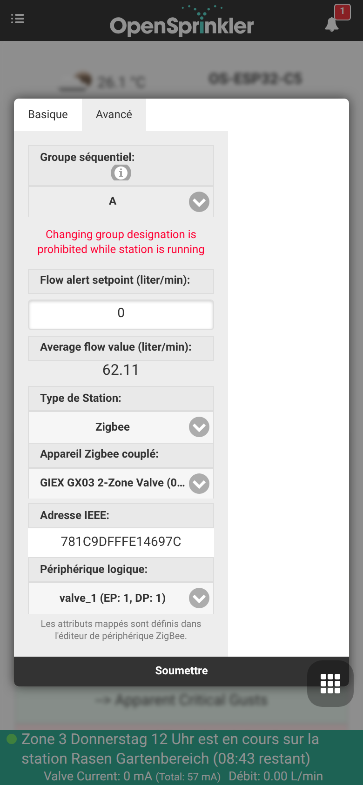

Intégration de la passerelle Zigbee
OpenSprinklerPro intègre des capacités de coordination Zigbee natives directement sur la carte ESP32-C5. La solution mono-puce ESP32-C5 prend en charge le Wi-Fi 6 double bande 2,4 GHz, le Bluetooth 5 (LE) et la norme 802.15.4 (Zigbee 3.0 / Thread).
En utilisant la variante Zigbee du micrologiciel, votre contrôleur OpenSprinkler fonctionne comme un coordinateur Zigbee complet. Il peut être appairé avec des capteurs domotiques, des vannes intelligentes, des sondes d'humidité du sol et des moniteurs de température afin d'adapter vos programmes d'arrosage en fonction des conditions locales en temps réel.
📸 Guide pas à pas de configuration
Ce guide vous montre comment configurer le mode radio, appairer des appareils Zigbee et associer leurs attributs à des capteurs analogiques.
Étape 1 : Configuration du mode radio
Tout d'abord, vérifiez que votre contrôleur ESP32-C5 est réglé sur le bon mode radio. Par défaut, l'ESP32-C5 peut fonctionner dans plusieurs modes. Accédez aux paramètres de mode via le menu latéral sous Setup ESP32 Mode.

Pour utiliser Zigbee, activez le mode Zigbee Gateway / Coordinator. Cela initialise la radio native 802.15.4 pour la gestion des canaux Zigbee, le routage des appareils et la création du réseau.
Étape 2 : Association et appairage des appareils
Une fois le mode Zigbee activé, vous pouvez accéder à la page ZigBee Gateway depuis le menu latéral. Cette page vous permet de contrôler la fenêtre d'appairage et de gérer les appareils physiques enregistrés.

- Cliquez sur Permit Join (généralement pendant 60 secondes) pour ouvrir le réseau aux nouveaux appareils.
- Mettez votre appareil Zigbee (par exemple, une électrovanne intelligente GIEX, un capteur de sol Tuya ou un capteur de température Xiaomi) en mode d'appairage (généralement en maintenant son bouton enfoncé pendant 5 secondes).
- L'appareil sera détecté, se verra attribuer une adresse courte et affichera son adresse IEEE 64 bits, son type d'appareil et la qualité du signal (LQI).
Étape 3 (facultatif) : Intégrations externes
Cette étape est facultative et n'est pas nécessaire au fonctionnement des stations ou capteurs Zigbee. Ouvrez Edit Options → Integrations uniquement si vous souhaitez transmettre vos données à des systèmes externes : publier les relevés des capteurs et les états des vannes via MQTT, les enregistrer dans InfluxDB, activer l'accès distant dans le cloud avec OpenThings Cloud (OTC), ou envoyer des notifications e-mail / IFTTT pour les événements du contrôleur.

Étape 4 : Configuration des capteurs multiples et étalonnage
Pour utiliser les données des capteurs dans vos ajustements de programme, accédez à Analog Sensor Configuration depuis le menu de bas de page. Ce tableau de bord affiche tous les capteurs logiques actifs, leurs liaisons physiques et l'état de leur batterie.

Étape 5 : Ajouter ou modifier un capteur Zigbee
Cliquez sur Add Sensor (ou modifiez un capteur existant) pour associer un attribut spécifique de l'appareil Zigbee (comme le pourcentage d'humidité du sol ou la température) à un emplacement de capteur analogique.

Dans cet éditeur, vous pouvez : - Attribuer un Nom reconnaissable au capteur. - Choisir le Type de capteur (par exemple, humidité, température, batterie, etc.). - Sélectionner l'Appareil source (Source Device) dans la liste déroulante des nœuds Zigbee appairés. - Définir des décalages d'étalonnage personnalisés et des seuils de déclenchement.
💧 Vannes intelligentes GIEX & contrôle des zones
Au-delà de la simple lecture de capteurs, OpenSprinklerPro peut piloter des vannes Zigbee GIEX alimentées par batterie directement en tant que zones d'arrosage (stations). Chaque sortie de vanne est associée à une station et ouverte/fermée sans fil par le contrôleur — sans câblage 24 V, électrovannes ni boîtiers de vannes.
Ce qui rend ces vannes spéciales
- Sans fil et sur batterie – la vanne fonctionne avec des batteries internes et communique via Zigbee ; une zone peut donc être placée n'importe où à portée du coordinateur.
- Plateforme de vanne intelligente Tuya – les vannes GIEX exposent leurs fonctions sous forme de points de données Tuya (DP) : commande marche/arrêt, minuterie, arrosage cyclique ou par durée et, sur les modèles équipés d'un compteur, télémétrie de débit et de volume.
- Plusieurs zones dans un seul appareil – un seul GX03 offre deux sorties totalement indépendantes, de sorte qu'un seul appareil appairé fournit deux zones OpenSprinkler distinctes.
- Rapport de batterie – le pourcentage de batterie restant est affiché directement sur la carte de la station dans le tableau de bord.
La famille de produits GIEX
| Modèle | Type | Sorties / appareils logiques | Utilisation typique |
|---|---|---|---|
| GX02 | Vanne d'eau intelligente simple | 1 vanne (valve_1, DP 1) |
Une zone d'arrosage sans fil |
| GX03 | Vanne d'eau intelligente à 2 zones | 2 vannes (valve_1 = DP 1, valve_2 = DP 2) |
Deux zones sans fil indépendantes à partir d'un seul appareil |
| GX04 | Capteur d'humidité du sol et de température | Humidité du sol + température | Ajustements de programme basés sur l'humidité (utilisé comme capteur analogique, voir l'étape 5 ci-dessus) |
Une fois appairés, tous ces appareils apparaissent ensemble sur la page ZigBee Gateway avec leur nom convivial, leur fabricant/modèle et leur adresse IEEE 64 bits :

Comment elles fonctionnent avec OpenSprinkler
Lorsqu'une vanne est utilisée comme station Zigbee, le contrôleur agit comme coordinateur Zigbee et traduit chaque exécution de station en une commande marche/arrêt (ou DP Tuya) envoyée à la bonne sortie de vanne :
- Un appareil appairé est identifié par son adresse IEEE 64 bits.
- Un appareil logique sélectionne la sortie individuelle à l'intérieur de cet appareil — par exemple
valve_1 (EP: 1, DP: 1)ouvalve_2 (EP: 1, DP: 2)pour les deux zones d'un GX03. - Le démarrage de la station ouvre la vanne ; durée d'exécution, programmes, groupes séquentiels, délais pluie/capteur et commande manuelle se comportent exactement comme une zone câblée.
Cela diffère de l'association capteur de l'étape 5 : un capteur lit des données pour les ajustements de programme, tandis qu'une station Zigbee commande activement une vanne.
Configurer une vanne GIEX comme zone
- Appairez la vanne sur la page ZigBee Gateway (voir l'étape 2 ci-dessus). L'appareil GIEX apparaît avec son nom convivial et son adresse IEEE.
- Sur le tableau de bord, ouvrez les paramètres de la station (icône d'engrenage sur la carte de la zone) et passez à l'onglet Avancé.
- Réglez le Type de station (Station Type) sur Zigbee.
- Choisissez l'appareil Zigbee appairé (par exemple GIEX GX03 2-Zone Valve). L'adresse IEEE est renseignée automatiquement.
- Sélectionnez l'appareil logique correspondant à la sortie que cette station doit commander —
valve_1pour la première zone,valve_2pour la seconde.

- Appuyez sur Soumettre (Submit). La station ouvre et ferme désormais sans fil la sortie de vanne GIEX sélectionnée à chaque exécution.
Pour un GX03 à deux zones, répétez les étapes pour une seconde station et sélectionnez valve_2, afin que les deux sorties soient commandées indépendamment.
Disponibilité de la plateforme
Les stations Zigbee et la fonction de zone GIEX nécessitent le contrôleur ESP32-C5 exécutant la variante de micrologiciel Zigbee. Elles ne sont pas disponibles sur les versions ESP8266 ou OSPi.
🛠️ Appareils pris en charge et détails techniques
Le micrologiciel interne prend en charge les clusters Zigbee 3.0 standard : - 0x0402 : Mesure de température (Tuya, Xiaomi, Sonoff) - 0x0405 : Humidité relative / Humidité du sol (GIEX, Tuya, Moes) - 0x0001 : Configuration de l'alimentation (rapports sur le pourcentage de batterie)
Mise en correspondance des appareils multicanaux
Lors de l'utilisation de vannes intelligentes multicanaux complexes (comme la vanne d'arrosage double sortie GIEX GX02), le coordinateur sépare les états des vannes individuelles et les canaux de télémétrie en sous-appareils logiques distincts. Cela garantit que chaque zone peut être déclenchée ou ajustée indépendamment.
Coexistence radio
L'ESP32-C5 gère simultanément les analyses BLE, le trafic Wi-Fi 6 et les paquets Zigbee 802.15.4. Lors des analyses de capteurs BLE, le protocole d'arbitrage du trafic de paquets (PTA) Zigbee réduit momentanément la priorité des points de terminaison Zigbee pour éviter les collisions radio et la perte de paquets, rétablissant instantanément la priorité complète lorsque l'analyse active s'arrête.